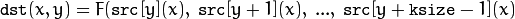
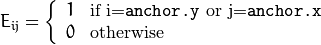
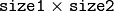
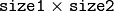

Image Filtering¶
Functions and classes described in this section are used to perform various linear or non-linear filtering operations on 2D images (represented as
Mat()‘s). It means that for each pixel location
 in the source image (normally, rectangular), its neighborhood is considered and used to compute the response. In case of a linear filter, it is a weighted sum of pixel values. In case of morphological operations, it is the minimum or maximum values, and so on. The computed response is stored in the destination image at the same location
. It means that the output image will be of the same size as the input image. Normally, the functions support multi-channel arrays, in which case every channel is processed independently. Therefore, the output image will also have the same number of channels as the input one.
in the source image (normally, rectangular), its neighborhood is considered and used to compute the response. In case of a linear filter, it is a weighted sum of pixel values. In case of morphological operations, it is the minimum or maximum values, and so on. The computed response is stored in the destination image at the same location
. It means that the output image will be of the same size as the input image. Normally, the functions support multi-channel arrays, in which case every channel is processed independently. Therefore, the output image will also have the same number of channels as the input one.
Another common feature of the functions and classes described in this section is that, unlike simple arithmetic functions, they need to extrapolate values of some non-existing pixels. For example, if you want to smooth an image using a Gaussian
filter, then, when processing the left-most pixels in each row, you need pixels to the left of them, that is, outside of the image. You can let these pixels be the same as the left-most image pixels (“replicated border” extrapolation method), or assume that all the non-existing pixels are zeros (“constant border” extrapolation method), and so on.
OpenCV enables you to specify the extrapolation method. For details, see the function borderInterpolate() and discussion of the borderType parameter in the section and various functions below.
/*
Various border types, image boundaries are denoted with '|'
* BORDER_REPLICATE: aaaaaa|abcdefgh|hhhhhhh
* BORDER_REFLECT: fedcba|abcdefgh|hgfedcb
* BORDER_REFLECT_101: gfedcb|abcdefgh|gfedcba
* BORDER_WRAP: cdefgh|abcdefgh|abcdefg
* BORDER_CONSTANT: iiiiii|abcdefgh|iiiiiii with some specified 'i'
*/
Note
- (Python) A complete example illustrating different morphological operations like erode/dilate, open/close, blackhat/tophat ... can be found at opencv_source_code/samples/python2/morphology.py
BaseColumnFilter¶
-
class
BaseColumnFilter¶
Base class for filters with single-column kernels.
class BaseColumnFilter
{
public:
virtual ~BaseColumnFilter();
// To be overriden by the user.
//
// runs a filtering operation on the set of rows,
// "dstcount + ksize - 1" rows on input,
// "dstcount" rows on output,
// each input and output row has "width" elements
// the filtered rows are written into "dst" buffer.
virtual void operator()(const uchar** src, uchar* dst, int dststep,
int dstcount, int width) = 0;
// resets the filter state (may be needed for IIR filters)
virtual void reset();
int ksize; // the aperture size
int anchor; // position of the anchor point,
// normally not used during the processing
};
The class BaseColumnFilter is a base class for filtering data using single-column kernels. Filtering does not have to be a linear operation. In general, it could be written as follows:

where
 is a filtering function but, as it is represented as a class, it can produce any side effects, memorize previously processed data, and so on. The class only defines an interface and is not used directly. Instead, there are several functions in OpenCV (and you can add more) that return pointers to the derived classes that implement specific filtering operations. Those pointers are then passed to the
is a filtering function but, as it is represented as a class, it can produce any side effects, memorize previously processed data, and so on. The class only defines an interface and is not used directly. Instead, there are several functions in OpenCV (and you can add more) that return pointers to the derived classes that implement specific filtering operations. Those pointers are then passed to the
FilterEngine constructor. While the filtering operation interface uses the uchar type, a particular implementation is not limited to 8-bit data.
BaseFilter¶
-
class
BaseFilter¶
Base class for 2D image filters.
class BaseFilter
{
public:
virtual ~BaseFilter();
// To be overriden by the user.
//
// runs a filtering operation on the set of rows,
// "dstcount + ksize.height - 1" rows on input,
// "dstcount" rows on output,
// each input row has "(width + ksize.width-1)*cn" elements
// each output row has "width*cn" elements.
// the filtered rows are written into "dst" buffer.
virtual void operator()(const uchar** src, uchar* dst, int dststep,
int dstcount, int width, int cn) = 0;
// resets the filter state (may be needed for IIR filters)
virtual void reset();
Size ksize;
Point anchor;
};
The class BaseFilter is a base class for filtering data using 2D kernels. Filtering does not have to be a linear operation. In general, it could be written as follows:
, \; \texttt{src} [y](x+1), \; ..., \; \texttt{src} [y](x+ \texttt{ksize.width} -1), \\ \texttt{src} [y+1](x), \; \texttt{src} [y+1](x+1), \; ..., \; \texttt{src} [y+1](x+ \texttt{ksize.width} -1), \\ ......................................................................................... \\ \texttt{src} [y+ \texttt{ksize.height-1} ](x), \\ \texttt{src} [y+ \texttt{ksize.height-1} ](x+1), \\ ...
\texttt{src} [y+ \texttt{ksize.height-1} ](x+ \texttt{ksize.width} -1))
\end{array}](../../../_images/math/2e66263937a705482e5789af472844442b4c4a84.png)
where
is a filtering function. The class only defines an interface and is not used directly. Instead, there are several functions in OpenCV (and you can add more) that return pointers to the derived classes that implement specific filtering operations. Those pointers are then passed to the
FilterEngine constructor. While the filtering operation interface uses the uchar type, a particular implementation is not limited to 8-bit data.
BaseRowFilter¶
-
class
BaseRowFilter¶
Base class for filters with single-row kernels.
class BaseRowFilter
{
public:
virtual ~BaseRowFilter();
// To be overriden by the user.
//
// runs filtering operation on the single input row
// of "width" element, each element is has "cn" channels.
// the filtered row is written into "dst" buffer.
virtual void operator()(const uchar* src, uchar* dst,
int width, int cn) = 0;
int ksize, anchor;
};
The class BaseRowFilter is a base class for filtering data using single-row kernels. Filtering does not have to be a linear operation. In general, it could be written as follows:
where
is a filtering function. The class only defines an interface and is not used directly. Instead, there are several functions in OpenCV (and you can add more) that return pointers to the derived classes that implement specific filtering operations. Those pointers are then passed to the
FilterEngine constructor. While the filtering operation interface uses the uchar type, a particular implementation is not limited to 8-bit data.
FilterEngine¶
-
class
FilterEngine¶
Generic image filtering class.
class FilterEngine
{
public:
// empty constructor
FilterEngine();
// builds a 2D non-separable filter (!_filter2D.empty()) or
// a separable filter (!_rowFilter.empty() && !_columnFilter.empty())
// the input data type will be "srcType", the output data type will be "dstType",
// the intermediate data type is "bufType".
// _rowBorderType and _columnBorderType determine how the image
// will be extrapolated beyond the image boundaries.
// _borderValue is only used when _rowBorderType and/or _columnBorderType
// == BORDER_CONSTANT
FilterEngine(const Ptr<BaseFilter>& _filter2D,
const Ptr<BaseRowFilter>& _rowFilter,
const Ptr<BaseColumnFilter>& _columnFilter,
int srcType, int dstType, int bufType,
int _rowBorderType=BORDER_REPLICATE,
int _columnBorderType=-1, // use _rowBorderType by default
const Scalar& _borderValue=Scalar());
virtual ~FilterEngine();
// separate function for the engine initialization
void init(const Ptr<BaseFilter>& _filter2D,
const Ptr<BaseRowFilter>& _rowFilter,
const Ptr<BaseColumnFilter>& _columnFilter,
int srcType, int dstType, int bufType,
int _rowBorderType=BORDER_REPLICATE, int _columnBorderType=-1,
const Scalar& _borderValue=Scalar());
// starts filtering of the ROI in an image of size "wholeSize".
// returns the starting y-position in the source image.
virtual int start(Size wholeSize, Rect roi, int maxBufRows=-1);
// alternative form of start that takes the image
// itself instead of "wholeSize". Set isolated to true to pretend that
// there are no real pixels outside of the ROI
// (so that the pixels are extrapolated using the specified border modes)
virtual int start(const Mat& src, const Rect& srcRoi=Rect(0,0,-1,-1),
bool isolated=false, int maxBufRows=-1);
// processes the next portion of the source image,
// "srcCount" rows starting from "src" and
// stores the results in "dst".
// returns the number of produced rows
virtual int proceed(const uchar* src, int srcStep, int srcCount,
uchar* dst, int dstStep);
// higher-level function that processes the whole
// ROI or the whole image with a single call
virtual void apply( const Mat& src, Mat& dst,
const Rect& srcRoi=Rect(0,0,-1,-1),
Point dstOfs=Point(0,0),
bool isolated=false);
bool isSeparable() const { return filter2D.empty(); }
// how many rows from the input image are not yet processed
int remainingInputRows() const;
// how many output rows are not yet produced
int remainingOutputRows() const;
...
// the starting and the ending rows in the source image
int startY, endY;
// pointers to the filters
Ptr<BaseFilter> filter2D;
Ptr<BaseRowFilter> rowFilter;
Ptr<BaseColumnFilter> columnFilter;
};
The class FilterEngine can be used to apply an arbitrary filtering operation to an image.
It contains all the necessary intermediate buffers, computes extrapolated values
of the “virtual” pixels outside of the image, and so on. Pointers to the initialized FilterEngine instances
are returned by various create*Filter functions (see below) and they are used inside high-level functions such as
filter2D(),
erode(),
dilate(), and others. Thus, the class plays a key role in many of OpenCV filtering functions.
This class makes it easier to combine filtering operations with other operations, such as color space conversions, thresholding, arithmetic operations, and others. By combining several operations together you can get much better performance because your data will stay in cache. For example, see below the implementation of the Laplace operator for floating-point images, which is a simplified implementation of
Laplacian() :
void laplace_f(const Mat& src, Mat& dst)
{
CV_Assert( src.type() == CV_32F );
dst.create(src.size(), src.type());
// get the derivative and smooth kernels for d2I/dx2.
// for d2I/dy2 consider using the same kernels, just swapped
Mat kd, ks;
getSobelKernels( kd, ks, 2, 0, ksize, false, ktype );
// process 10 source rows at once
int DELTA = std::min(10, src.rows);
Ptr<FilterEngine> Fxx = createSeparableLinearFilter(src.type(),
dst.type(), kd, ks, Point(-1,-1), 0, borderType, borderType, Scalar() );
Ptr<FilterEngine> Fyy = createSeparableLinearFilter(src.type(),
dst.type(), ks, kd, Point(-1,-1), 0, borderType, borderType, Scalar() );
int y = Fxx->start(src), dsty = 0, dy = 0;
Fyy->start(src);
const uchar* sptr = src.data + y*src.step;
// allocate the buffers for the spatial image derivatives;
// the buffers need to have more than DELTA rows, because at the
// last iteration the output may take max(kd.rows-1,ks.rows-1)
// rows more than the input.
Mat Ixx( DELTA + kd.rows - 1, src.cols, dst.type() );
Mat Iyy( DELTA + kd.rows - 1, src.cols, dst.type() );
// inside the loop always pass DELTA rows to the filter
// (note that the "proceed" method takes care of possibe overflow, since
// it was given the actual image height in the "start" method)
// on output you can get:
// * < DELTA rows (initial buffer accumulation stage)
// * = DELTA rows (settled state in the middle)
// * > DELTA rows (when the input image is over, generate
// "virtual" rows using the border mode and filter them)
// this variable number of output rows is dy.
// dsty is the current output row.
// sptr is the pointer to the first input row in the portion to process
for( ; dsty < dst.rows; sptr += DELTA*src.step, dsty += dy )
{
Fxx->proceed( sptr, (int)src.step, DELTA, Ixx.data, (int)Ixx.step );
dy = Fyy->proceed( sptr, (int)src.step, DELTA, d2y.data, (int)Iyy.step );
if( dy > 0 )
{
Mat dstripe = dst.rowRange(dsty, dsty + dy);
add(Ixx.rowRange(0, dy), Iyy.rowRange(0, dy), dstripe);
}
}
}
If you do not need that much control of the filtering process, you can simply use the FilterEngine::apply method. The method is implemented as follows:
void FilterEngine::apply(const Mat& src, Mat& dst,
const Rect& srcRoi, Point dstOfs, bool isolated)
{
// check matrix types
CV_Assert( src.type() == srcType && dst.type() == dstType );
// handle the "whole image" case
Rect _srcRoi = srcRoi;
if( _srcRoi == Rect(0,0,-1,-1) )
_srcRoi = Rect(0,0,src.cols,src.rows);
// check if the destination ROI is inside dst.
// and FilterEngine::start will check if the source ROI is inside src.
CV_Assert( dstOfs.x >= 0 && dstOfs.y >= 0 &&
dstOfs.x + _srcRoi.width <= dst.cols &&
dstOfs.y + _srcRoi.height <= dst.rows );
// start filtering
int y = start(src, _srcRoi, isolated);
// process the whole ROI. Note that "endY - startY" is the total number
// of the source rows to process
// (including the possible rows outside of srcRoi but inside the source image)
proceed( src.data + y*src.step,
(int)src.step, endY - startY,
dst.data + dstOfs.y*dst.step +
dstOfs.x*dst.elemSize(), (int)dst.step );
}
Unlike the earlier versions of OpenCV, now the filtering operations fully support the notion of image ROI, that is, pixels outside of the ROI but inside the image can be used in the filtering operations. For example, you can take a ROI of a single pixel and filter it. This will be a filter response at that particular pixel. However, it is possible to emulate the old behavior by passing isolated=false to FilterEngine::start or FilterEngine::apply . You can pass the ROI explicitly to FilterEngine::apply or construct new matrix headers:
// compute dI/dx derivative at src(x,y)
// method 1:
// form a matrix header for a single value
float val1 = 0;
Mat dst1(1,1,CV_32F,&val1);
Ptr<FilterEngine> Fx = createDerivFilter(CV_32F, CV_32F,
1, 0, 3, BORDER_REFLECT_101);
Fx->apply(src, Rect(x,y,1,1), Point(), dst1);
// method 2:
// form a matrix header for a single value
float val2 = 0;
Mat dst2(1,1,CV_32F,&val2);
Mat pix_roi(src, Rect(x,y,1,1));
Sobel(pix_roi, dst2, dst2.type(), 1, 0, 3, 1, 0, BORDER_REFLECT_101);
printf("method1 =
Explore the data types. As it was mentioned in the
BaseFilter description, the specific filters can process data of any type, despite that Base*Filter::operator() only takes uchar pointers and no information about the actual types. To make it all work, the following rules are used:
- In case of separable filtering,
FilterEngine::rowFilteris applied first. It transforms the input image data (of typesrcType) to the intermediate results stored in the internal buffers (of typebufType). Then, these intermediate results are processed as single-channel data withFilterEngine::columnFilterand stored in the output image (of typedstType). Thus, the input type forrowFilterissrcTypeand the output type isbufType. The input type forcolumnFilterisCV_MAT_DEPTH(bufType)and the output type isCV_MAT_DEPTH(dstType). - In case of non-separable filtering,
bufTypemust be the same assrcType. The source data is copied to the temporary buffer, if needed, and then just passed toFilterEngine::filter2D. That is, the input type forfilter2DissrcType(=bufType) and the output type isdstType.
bilateralFilter¶
Applies the bilateral filter to an image.
-
C++:
bilateralFilter(InputArray src, OutputArray dst, int d, double sigmaColor, double sigmaSpace, int borderType=BORDER_DEFAULT )¶
-
Python:
cv2.bilateralFilter(src, d, sigmaColor, sigmaSpace[, dst[, borderType]]) → dst¶ Parameters: - src – Source 8-bit or floating-point, 1-channel or 3-channel image.
- dst – Destination image of the same size and type as
src. - d – Diameter of each pixel neighborhood that is used during filtering. If it is non-positive, it is computed from
sigmaSpace. - sigmaColor – Filter sigma in the color space. A larger value of the parameter means that farther colors within the pixel neighborhood (see
sigmaSpace) will be mixed together, resulting in larger areas of semi-equal color. - sigmaSpace – Filter sigma in the coordinate space. A larger value of the parameter means that farther pixels will influence each other as long as their colors are close enough (see
sigmaColor). Whend>0, it specifies the neighborhood size regardless ofsigmaSpace. Otherwise,dis proportional tosigmaSpace.
The function applies bilateral filtering to the input image, as described in
http://www.dai.ed.ac.uk/CVonline/LOCAL_COPIES/MANDUCHI1/Bilateral_Filtering.html
bilateralFilter can reduce unwanted noise very well while keeping edges fairly sharp. However, it is very slow compared to most filters.
Sigma values: For simplicity, you can set the 2 sigma values to be the same. If they are small (< 10), the filter will not have much effect, whereas if they are large (> 150), they will have a very strong effect, making the image look “cartoonish”.
Filter size: Large filters (d > 5) are very slow, so it is recommended to use d=5 for real-time applications, and perhaps d=9 for offline applications that need heavy noise filtering.
This filter does not work inplace.
adaptiveBilateralFilter¶
Applies the adaptive bilateral filter to an image.
-
C++:
adaptiveBilateralFilter(InputArray src, OutputArray dst, Size ksize, double sigmaSpace, double maxSigmaColor=20.0, Point anchor=Point(-1, -1), int borderType=BORDER_DEFAULT )¶
-
Python:
cv2.adaptiveBilateralFilter(src, ksize, sigmaSpace[, dst[, maxSigmaColor[, anchor[, borderType]]]]) → dst¶ Parameters: - src – The source image
- dst – The destination image; will have the same size and the same type as src
- ksize – The kernel size. This is the neighborhood where the local variance will be calculated, and where pixels will contribute (in a weighted manner).
- sigmaSpace – Filter sigma in the coordinate space. Larger value of the parameter means that farther pixels will influence each other (as long as their colors are close enough; see sigmaColor). Then d>0, it specifies the neighborhood size regardless of sigmaSpace, otherwise d is proportional to sigmaSpace.
- maxSigmaColor – Maximum allowed sigma color (will clamp the value calculated in the ksize neighborhood. Larger value of the parameter means that more dissimilar pixels will influence each other (as long as their colors are close enough; see sigmaColor). Then d>0, it specifies the neighborhood size regardless of sigmaSpace, otherwise d is proportional to sigmaSpace.
- borderType – Pixel extrapolation method.
A main part of our strategy will be to load each raw pixel once, and reuse it to calculate all pixels in the output (filtered) image that need this pixel value. The math of the filter is that of the usual bilateral filter, except that the sigma color is calculated in the neighborhood, and clamped by the optional input value.
blur¶
Blurs an image using the normalized box filter.
-
C++:
blur(InputArray src, OutputArray dst, Size ksize, Point anchor=Point(-1,-1), int borderType=BORDER_DEFAULT )¶
-
Python:
cv2.blur(src, ksize[, dst[, anchor[, borderType]]]) → dst¶ Parameters: - src – input image; it can have any number of channels, which are processed independently, but the depth should be
CV_8U,CV_16U,CV_16S,CV_32ForCV_64F. - dst – output image of the same size and type as
src. - ksize – blurring kernel size.
- anchor – anchor point; default value
Point(-1,-1)means that the anchor is at the kernel center. - borderType – border mode used to extrapolate pixels outside of the image.
- src – input image; it can have any number of channels, which are processed independently, but the depth should be
The function smoothes an image using the kernel:
The call blur(src, dst, ksize, anchor, borderType) is equivalent to boxFilter(src, dst, src.type(), anchor, true, borderType) .
See also
boxFilter(),
bilateralFilter(),
GaussianBlur(),
medianBlur()
borderInterpolate¶
Computes the source location of an extrapolated pixel.
-
C++:
borderInterpolate(int p, int len, int borderType)¶
-
Python:
cv2.borderInterpolate(p, len, borderType) → retval¶ Parameters: - p – 0-based coordinate of the extrapolated pixel along one of the axes, likely <0 or >=
len. - len – Length of the array along the corresponding axis.
- borderType – Border type, one of the
BORDER_*, except forBORDER_TRANSPARENTandBORDER_ISOLATED. WhenborderType==BORDER_CONSTANT, the function always returns -1, regardless ofpandlen.
- p – 0-based coordinate of the extrapolated pixel along one of the axes, likely <0 or >=
The function computes and returns the coordinate of a donor pixel corresponding to the specified extrapolated pixel when using the specified extrapolation border mode. For example, if you use BORDER_WRAP mode in the horizontal direction, BORDER_REFLECT_101 in the vertical direction and want to compute value of the “virtual” pixel Point(-5, 100) in a floating-point image img , it looks like:
float val = img.at<float>(borderInterpolate(100, img.rows, BORDER_REFLECT_101),
borderInterpolate(-5, img.cols, BORDER_WRAP));
Normally, the function is not called directly. It is used inside
FilterEngine and
copyMakeBorder() to compute tables for quick extrapolation.
See also
boxFilter¶
Blurs an image using the box filter.
-
C++:
boxFilter(InputArray src, OutputArray dst, int ddepth, Size ksize, Point anchor=Point(-1,-1), bool normalize=true, int borderType=BORDER_DEFAULT )¶
-
Python:
cv2.boxFilter(src, ddepth, ksize[, dst[, anchor[, normalize[, borderType]]]]) → dst¶ Parameters: - src – input image.
- dst – output image of the same size and type as
src. - ddepth – the output image depth (-1 to use
src.depth()). - ksize – blurring kernel size.
- anchor – anchor point; default value
Point(-1,-1)means that the anchor is at the kernel center. - normalize – flag, specifying whether the kernel is normalized by its area or not.
- borderType – border mode used to extrapolate pixels outside of the image.
The function smoothes an image using the kernel:
where
Unnormalized box filter is useful for computing various integral characteristics over each pixel neighborhood, such as covariance matrices of image derivatives (used in dense optical flow algorithms, and so on). If you need to compute pixel sums over variable-size windows, use integral() .
See also
blur(),
bilateralFilter(),
GaussianBlur(),
medianBlur(),
integral()
buildPyramid¶
Constructs the Gaussian pyramid for an image.
-
C++:
buildPyramid(InputArray src, OutputArrayOfArrays dst, int maxlevel, int borderType=BORDER_DEFAULT )¶ Parameters: - src – Source image. Check
pyrDown()for the list of supported types. - dst – Destination vector of
maxlevel+1images of the same type assrc.dst[0]will be the same assrc.dst[1]is the next pyramid layer, a smoothed and down-sizedsrc, and so on. - maxlevel – 0-based index of the last (the smallest) pyramid layer. It must be non-negative.
- borderType – Pixel extrapolation method (BORDER_CONSTANT don’t supported). See
borderInterpolate()for details.
- src – Source image. Check
The function constructs a vector of images and builds the Gaussian pyramid by recursively applying
pyrDown() to the previously built pyramid layers, starting from dst[0]==src .
copyMakeBorder¶
Forms a border around an image.
-
C++:
copyMakeBorder(InputArray src, OutputArray dst, int top, int bottom, int left, int right, int borderType, const Scalar& value=Scalar() )¶
-
Python:
cv2.copyMakeBorder(src, top, bottom, left, right, borderType[, dst[, value]]) → dst¶
-
C:
cvCopyMakeBorder(const CvArr* src, CvArr* dst, CvPoint offset, int bordertype, CvScalar value=cvScalarAll(0) )¶
-
Python:
cv.CopyMakeBorder(src, dst, offset, bordertype, value=(0, 0, 0, 0)) → None¶ Parameters: - src – Source image.
- dst – Destination image of the same type as
srcand the sizeSize(src.cols+left+right, src.rows+top+bottom). - top –
- bottom –
- left –
- right – Parameter specifying how many pixels in each direction from the source image rectangle to extrapolate. For example,
top=1, bottom=1, left=1, right=1mean that 1 pixel-wide border needs to be built. - borderType – Border type. See
borderInterpolate()for details. - value – Border value if
borderType==BORDER_CONSTANT.
The function copies the source image into the middle of the destination image. The areas to the left, to the right, above and below the copied source image will be filled with extrapolated pixels. This is not what
FilterEngine or filtering functions based on it do (they extrapolate pixels on-fly), but what other more complex functions, including your own, may do to simplify image boundary handling.
The function supports the mode when src is already in the middle of dst . In this case, the function does not copy src itself but simply constructs the border, for example:
// let border be the same in all directions
int border=2;
// constructs a larger image to fit both the image and the border
Mat gray_buf(rgb.rows + border*2, rgb.cols + border*2, rgb.depth());
// select the middle part of it w/o copying data
Mat gray(gray_canvas, Rect(border, border, rgb.cols, rgb.rows));
// convert image from RGB to grayscale
cvtColor(rgb, gray, CV_RGB2GRAY);
// form a border in-place
copyMakeBorder(gray, gray_buf, border, border,
border, border, BORDER_REPLICATE);
// now do some custom filtering ...
...
Note
When the source image is a part (ROI) of a bigger image, the function will try to use the pixels outside of the ROI to form a border. To disable this feature and always do extrapolation, as if src was not a ROI, use borderType | BORDER_ISOLATED.
See also
createBoxFilter¶
Returns a box filter engine.
-
C++:
createBoxFilter(int srcType, int dstType, Size ksize, Point anchor=Point(-1,-1), bool normalize=true, int borderType=BORDER_DEFAULT)¶
-
C++:
getRowSumFilter(int srcType, int sumType, int ksize, int anchor=-1)¶
-
C++:
getColumnSumFilter(int sumType, int dstType, int ksize, int anchor=-1, double scale=1)¶ Parameters: - srcType – Source image type.
- sumType – Intermediate horizontal sum type that must have as many channels as
srcType. - dstType – Destination image type that must have as many channels as
srcType. - ksize – Aperture size.
- anchor – Anchor position with the kernel. Negative values mean that the anchor is at the kernel center.
- normalize – Flag specifying whether the sums are normalized or not. See
boxFilter()for details. - scale – Another way to specify normalization in lower-level
getColumnSumFilter. - borderType – Border type to use. See
borderInterpolate().
The function is a convenience function that retrieves the horizontal sum primitive filter with
getRowSumFilter() , vertical sum filter with
getColumnSumFilter() , constructs new
FilterEngine , and passes both of the primitive filters there. The constructed filter engine can be used for image filtering with normalized or unnormalized box filter.
The function itself is used by
blur() and
boxFilter() .
See also
createDerivFilter¶
Returns an engine for computing image derivatives.
-
C++:
createDerivFilter(int srcType, int dstType, int dx, int dy, int ksize, int borderType=BORDER_DEFAULT )¶ Parameters: - srcType – Source image type.
- dstType – Destination image type that must have as many channels as
srcType. - dx – Derivative order in respect of x.
- dy – Derivative order in respect of y.
- ksize – Aperture size See
getDerivKernels(). - borderType – Border type to use. See
borderInterpolate().
The function createDerivFilter() is a small convenience function that retrieves linear filter coefficients for computing image derivatives using
getDerivKernels() and then creates a separable linear filter with
createSeparableLinearFilter() . The function is used by
Sobel() and
Scharr() .
createGaussianFilter¶
Returns an engine for smoothing images with the Gaussian filter.
-
C++:
createGaussianFilter(int type, Size ksize, double sigma1, double sigma2=0, int borderType=BORDER_DEFAULT )¶ Parameters: - type – Source and destination image type.
- ksize – Aperture size. See
getGaussianKernel(). - sigma1 – Gaussian sigma in the horizontal direction. See
getGaussianKernel(). - sigma2 – Gaussian sigma in the vertical direction. If 0, then
 .
. - borderType – Border type to use. See
borderInterpolate().
The function createGaussianFilter() computes Gaussian kernel coefficients and then returns a separable linear filter for that kernel. The function is used by
GaussianBlur() . Note that while the function takes just one data type, both for input and output, you can pass this limitation by calling
getGaussianKernel() and then
createSeparableLinearFilter() directly.
createLinearFilter¶
Creates a non-separable linear filter engine.
-
C++:
createLinearFilter(int srcType, int dstType, InputArray kernel, Point _anchor=Point(-1,-1), double delta=0, int rowBorderType=BORDER_DEFAULT, int columnBorderType=-1, const Scalar& borderValue=Scalar() )¶
-
C++:
getLinearFilter(int srcType, int dstType, InputArray kernel, Point anchor=Point(-1,-1), double delta=0, int bits=0)¶ Parameters: - srcType – Source image type.
- dstType – Destination image type that must have as many channels as
srcType. - kernel – 2D array of filter coefficients.
- anchor – Anchor point within the kernel. Special value
Point(-1,-1)means that the anchor is at the kernel center. - delta – Value added to the filtered results before storing them.
- bits – Number of the fractional bits. The parameter is used when the kernel is an integer matrix representing fixed-point filter coefficients.
- rowBorderType – Pixel extrapolation method in the vertical direction. For details, see
borderInterpolate(). - columnBorderType – Pixel extrapolation method in the horizontal direction.
- borderValue – Border value used in case of a constant border.
The function returns a pointer to a 2D linear filter for the specified kernel, the source array type, and the destination array type. The function is a higher-level function that calls getLinearFilter and passes the retrieved 2D filter to the
FilterEngine constructor.
See also
createMorphologyFilter¶
Creates an engine for non-separable morphological operations.
-
C++:
createMorphologyFilter(int op, int type, InputArray kernel, Point anchor=Point(-1,-1), int rowBorderType=BORDER_CONSTANT, int columnBorderType=-1, const Scalar& borderValue=morphologyDefaultBorderValue() )¶
-
C++:
getMorphologyFilter(int op, int type, InputArray kernel, Point anchor=Point(-1,-1) )¶
-
C++:
getMorphologyRowFilter(int op, int type, int ksize, int anchor=-1 )¶
-
C++:
getMorphologyColumnFilter(int op, int type, int ksize, int anchor=-1 )¶
-
C++:
morphologyDefaultBorderValue()¶ Parameters: - op – Morphology operation ID,
MORPH_ERODEorMORPH_DILATE. - type – Input/output image type. The number of channels can be arbitrary. The depth should be one of
CV_8U,CV_16U,CV_16S,CV_32F` or ``CV_64F. - kernel – 2D 8-bit structuring element for a morphological operation. Non-zero elements indicate the pixels that belong to the element.
- ksize – Horizontal or vertical structuring element size for separable morphological operations.
- anchor – Anchor position within the structuring element. Negative values mean that the anchor is at the kernel center.
- rowBorderType – Pixel extrapolation method in the vertical direction. For details, see
borderInterpolate(). - columnBorderType – Pixel extrapolation method in the horizontal direction.
- borderValue – Border value in case of a constant border. The default value,
morphologyDefaultBorderValue, has a special meaning. It is transformed for the erosion and to for the dilation, which means that the minimum (maximum) is effectively computed only over the pixels that are inside the image.
- op – Morphology operation ID,
The functions construct primitive morphological filtering operations or a filter engine based on them. Normally it is enough to use
createMorphologyFilter() or even higher-level
erode(),
dilate() , or
morphologyEx() .
Note that
createMorphologyFilter() analyzes the structuring element shape and builds a separable morphological filter engine when the structuring element is square.
See also
createSeparableLinearFilter¶
Creates an engine for a separable linear filter.
-
C++:
createSeparableLinearFilter(int srcType, int dstType, InputArray rowKernel, InputArray columnKernel, Point anchor=Point(-1,-1), double delta=0, int rowBorderType=BORDER_DEFAULT, int columnBorderType=-1, const Scalar& borderValue=Scalar() )¶
-
C++:
getLinearColumnFilter(int bufType, int dstType, InputArray kernel, int anchor, int symmetryType, double delta=0, int bits=0 )¶
-
C++:
getLinearRowFilter(int srcType, int bufType, InputArray kernel, int anchor, int symmetryType)¶ Parameters: - srcType – Source array type.
- dstType – Destination image type that must have as many channels as
srcType. - bufType – Intermediate buffer type that must have as many channels as
srcType. - rowKernel – Coefficients for filtering each row.
- columnKernel – Coefficients for filtering each column.
- anchor – Anchor position within the kernel. Negative values mean that anchor is positioned at the aperture center.
- delta – Value added to the filtered results before storing them.
- bits – Number of the fractional bits. The parameter is used when the kernel is an integer matrix representing fixed-point filter coefficients.
- rowBorderType – Pixel extrapolation method in the vertical direction. For details, see
borderInterpolate(). - columnBorderType – Pixel extrapolation method in the horizontal direction.
- borderValue – Border value used in case of a constant border.
- symmetryType – Type of each row and column kernel. See
getKernelType().
The functions construct primitive separable linear filtering operations or a filter engine based on them. Normally it is enough to use
createSeparableLinearFilter() or even higher-level
sepFilter2D() . The function
createMorphologyFilter() is smart enough to figure out the symmetryType for each of the two kernels, the intermediate bufType and, if filtering can be done in integer arithmetics, the number of bits to encode the filter coefficients. If it does not work for you, it is possible to call getLinearColumnFilter,``getLinearRowFilter`` directly and then pass them to the
FilterEngine constructor.
See also
sepFilter2D(),
createLinearFilter(),
FilterEngine,
getKernelType()
dilate¶
Dilates an image by using a specific structuring element.
-
C++:
dilate(InputArray src, OutputArray dst, InputArray kernel, Point anchor=Point(-1,-1), int iterations=1, int borderType=BORDER_CONSTANT, const Scalar& borderValue=morphologyDefaultBorderValue() )¶
-
Python:
cv2.dilate(src, kernel[, dst[, anchor[, iterations[, borderType[, borderValue]]]]]) → dst¶
-
C:
cvDilate(const CvArr* src, CvArr* dst, IplConvKernel* element=NULL, int iterations=1 )¶
-
Python:
cv.Dilate(src, dst, element=None, iterations=1) → None¶ Parameters: - src – input image; the number of channels can be arbitrary, but the depth should be one of
CV_8U,CV_16U,CV_16S,CV_32F` or ``CV_64F. - dst – output image of the same size and type as
src. - element – structuring element used for dilation; if
element=Mat(), a3 x 3rectangular structuring element is used. - anchor – position of the anchor within the element; default value
(-1, -1)means that the anchor is at the element center. - iterations – number of times dilation is applied.
- borderType – pixel extrapolation method (see
borderInterpolate()for details). - borderValue – border value in case of a constant border (see
createMorphologyFilter()for details).
- src – input image; the number of channels can be arbitrary, but the depth should be one of
The function dilates the source image using the specified structuring element that determines the shape of a pixel neighborhood over which the maximum is taken:
The function supports the in-place mode. Dilation can be applied several ( iterations ) times. In case of multi-channel images, each channel is processed independently.
See also
Note
- An example using the morphological dilate operation can be found at opencv_source_code/samples/cpp/morphology2.cpp
erode¶
Erodes an image by using a specific structuring element.
-
C++:
erode(InputArray src, OutputArray dst, InputArray kernel, Point anchor=Point(-1,-1), int iterations=1, int borderType=BORDER_CONSTANT, const Scalar& borderValue=morphologyDefaultBorderValue() )¶
-
Python:
cv2.erode(src, kernel[, dst[, anchor[, iterations[, borderType[, borderValue]]]]]) → dst¶
-
C:
cvErode(const CvArr* src, CvArr* dst, IplConvKernel* element=NULL, int iterations=1)¶
-
Python:
cv.Erode(src, dst, element=None, iterations=1) → None¶ Parameters: - src – input image; the number of channels can be arbitrary, but the depth should be one of
CV_8U,CV_16U,CV_16S,CV_32F` or ``CV_64F. - dst – output image of the same size and type as
src. - element – structuring element used for erosion; if
element=Mat(), a3 x 3rectangular structuring element is used. - anchor – position of the anchor within the element; default value
(-1, -1)means that the anchor is at the element center. - iterations – number of times erosion is applied.
- borderType – pixel extrapolation method (see
borderInterpolate()for details). - borderValue – border value in case of a constant border (see
createMorphologyFilter()for details).
- src – input image; the number of channels can be arbitrary, but the depth should be one of
The function erodes the source image using the specified structuring element that determines the shape of a pixel neighborhood over which the minimum is taken:
The function supports the in-place mode. Erosion can be applied several ( iterations ) times. In case of multi-channel images, each channel is processed independently.
See also
Note
- An example using the morphological erode operation can be found at opencv_source_code/samples/cpp/morphology2.cpp
filter2D¶
Convolves an image with the kernel.
-
C++:
filter2D(InputArray src, OutputArray dst, int ddepth, InputArray kernel, Point anchor=Point(-1,-1), double delta=0, int borderType=BORDER_DEFAULT )¶
-
Python:
cv2.filter2D(src, ddepth, kernel[, dst[, anchor[, delta[, borderType]]]]) → dst¶
-
C:
cvFilter2D(const CvArr* src, CvArr* dst, const CvMat* kernel, CvPoint anchor=cvPoint(-1,-1) )¶
-
Python:
cv.Filter2D(src, dst, kernel, anchor=(-1, -1)) → None¶ Parameters: - src – input image.
- dst – output image of the same size and the same number of channels as
src. - ddepth –
- desired depth of the destination image; if it is negative, it will be the same as
src.depth(); the following combinations ofsrc.depth()andddepthare supported: src.depth()=CV_8U,ddepth= -1/CV_16S/CV_32F/CV_64Fsrc.depth()=CV_16U/CV_16S,ddepth= -1/CV_32F/CV_64Fsrc.depth()=CV_32F,ddepth= -1/CV_32F/CV_64Fsrc.depth()=CV_64F,ddepth= -1/CV_64F
when
ddepth=-1, the output image will have the same depth as the source. - desired depth of the destination image; if it is negative, it will be the same as
- kernel – convolution kernel (or rather a correlation kernel), a single-channel floating point matrix; if you want to apply different kernels to different channels, split the image into separate color planes using
split()and process them individually. - anchor – anchor of the kernel that indicates the relative position of a filtered point within the kernel; the anchor should lie within the kernel; default value (-1,-1) means that the anchor is at the kernel center.
- delta – optional value added to the filtered pixels before storing them in
dst. - borderType – pixel extrapolation method (see
borderInterpolate()for details).
The function applies an arbitrary linear filter to an image. In-place operation is supported. When the aperture is partially outside the image, the function interpolates outlier pixel values according to the specified border mode.
The function does actually compute correlation, not the convolution:
That is, the kernel is not mirrored around the anchor point. If you need a real convolution, flip the kernel using
flip() and set the new anchor to (kernel.cols - anchor.x - 1, kernel.rows - anchor.y - 1) .
The function uses the DFT-based algorithm in case of sufficiently large kernels (~``11 x 11`` or larger) and the direct algorithm (that uses the engine retrieved by createLinearFilter() ) for small kernels.
See also
GaussianBlur¶
Blurs an image using a Gaussian filter.
-
C++:
GaussianBlur(InputArray src, OutputArray dst, Size ksize, double sigmaX, double sigmaY=0, int borderType=BORDER_DEFAULT )¶
-
Python:
cv2.GaussianBlur(src, ksize, sigmaX[, dst[, sigmaY[, borderType]]]) → dst¶ Parameters: - src – input image; the image can have any number of channels, which are processed independently, but the depth should be
CV_8U,CV_16U,CV_16S,CV_32ForCV_64F. - dst – output image of the same size and type as
src. - ksize – Gaussian kernel size.
ksize.widthandksize.heightcan differ but they both must be positive and odd. Or, they can be zero’s and then they are computed fromsigma*. - sigmaX – Gaussian kernel standard deviation in X direction.
- sigmaY – Gaussian kernel standard deviation in Y direction; if
sigmaYis zero, it is set to be equal tosigmaX, if both sigmas are zeros, they are computed fromksize.widthandksize.height, respectively (seegetGaussianKernel()for details); to fully control the result regardless of possible future modifications of all this semantics, it is recommended to specify all ofksize,sigmaX, andsigmaY. - borderType – pixel extrapolation method (see
borderInterpolate()for details).
- src – input image; the image can have any number of channels, which are processed independently, but the depth should be
The function convolves the source image with the specified Gaussian kernel. In-place filtering is supported.
See also
sepFilter2D(),
filter2D(),
blur(),
boxFilter(),
bilateralFilter(),
medianBlur()
getDerivKernels¶
Returns filter coefficients for computing spatial image derivatives.
-
C++:
getDerivKernels(OutputArray kx, OutputArray ky, int dx, int dy, int ksize, bool normalize=false, int ktype=CV_32F )¶
-
Python:
cv2.getDerivKernels(dx, dy, ksize[, kx[, ky[, normalize[, ktype]]]]) → kx, ky¶ Parameters: - kx – Output matrix of row filter coefficients. It has the type
ktype. - ky – Output matrix of column filter coefficients. It has the type
ktype. - dx – Derivative order in respect of x.
- dy – Derivative order in respect of y.
- ksize – Aperture size. It can be
CV_SCHARR, 1, 3, 5, or 7. - normalize – Flag indicating whether to normalize (scale down) the filter coefficients or not. Theoretically, the coefficients should have the denominator . If you are going to filter floating-point images, you are likely to use the normalized kernels. But if you compute derivatives of an 8-bit image, store the results in a 16-bit image, and wish to preserve all the fractional bits, you may want to set
normalize=false. - ktype – Type of filter coefficients. It can be
CV_32forCV_64F.
- kx – Output matrix of row filter coefficients. It has the type
The function computes and returns the filter coefficients for spatial image derivatives. When ksize=CV_SCHARR , the Scharr
kernels are generated (see
Scharr() ). Otherwise, Sobel kernels are generated (see
Sobel() ). The filters are normally passed to
sepFilter2D() or to
createSeparableLinearFilter() .
getGaussianKernel¶
Returns Gaussian filter coefficients.
-
C++:
getGaussianKernel(int ksize, double sigma, int ktype=CV_64F )¶
-
Python:
cv2.getGaussianKernel(ksize, sigma[, ktype]) → retval¶ Parameters: - ksize – Aperture size. It should be odd ( ) and positive.
- sigma – Gaussian standard deviation. If it is non-positive, it is computed from
ksizeassigma = 0.3*((ksize-1)*0.5 - 1) + 0.8. - ktype – Type of filter coefficients. It can be
CV_32forCV_64F.
The function computes and returns the matrix of Gaussian filter coefficients:

where
and
 is the scale factor chosen so that
.
is the scale factor chosen so that
.
Two of such generated kernels can be passed to
sepFilter2D() or to
createSeparableLinearFilter(). Those functions automatically recognize smoothing kernels (a symmetrical kernel with sum of weights equal to 1) and handle them accordingly. You may also use the higher-level
GaussianBlur().
getKernelType¶
Returns the kernel type.
-
C++:
getKernelType(InputArray kernel, Point anchor)¶ Parameters: - kernel – 1D array of the kernel coefficients to analyze.
- anchor – Anchor position within the kernel.
The function analyzes the kernel coefficients and returns the corresponding kernel type:
- KERNEL_GENERAL The kernel is generic. It is used when there is no any type of symmetry or other properties.
- KERNEL_SYMMETRICAL The kernel is symmetrical: , and the anchor is at the center.
- KERNEL_ASYMMETRICAL The kernel is asymmetrical: , and the anchor is at the center.
- KERNEL_SMOOTH All the kernel elements are non-negative and summed to 1. For example, the Gaussian kernel is both smooth kernel and symmetrical, so the function returns
KERNEL_SMOOTH | KERNEL_SYMMETRICAL.- KERNEL_INTEGER All the kernel coefficients are integer numbers. This flag can be combined with
KERNEL_SYMMETRICALorKERNEL_ASYMMETRICAL.
getStructuringElement¶
Returns a structuring element of the specified size and shape for morphological operations.
-
C++:
getStructuringElement(int shape, Size ksize, Point anchor=Point(-1,-1))¶
-
Python:
cv2.getStructuringElement(shape, ksize[, anchor]) → retval¶
-
C:
cvCreateStructuringElementEx(int cols, int rows, int anchor_x, int anchor_y, int shape, int* values=NULL )¶
-
Python:
cv.CreateStructuringElementEx(cols, rows, anchorX, anchorY, shape, values=None) → kernel¶ Parameters: - shape –
Element shape that could be one of the following:
- MORPH_RECT - a rectangular structuring element:

- MORPH_ELLIPSE - an elliptic structuring element, that is, a filled ellipse inscribed into the rectangle
Rect(0, 0, esize.width, 0.esize.height) - MORPH_CROSS - a cross-shaped structuring element:

- CV_SHAPE_CUSTOM - custom structuring element (OpenCV 1.x API)
- MORPH_RECT - a rectangular structuring element:
- ksize – Size of the structuring element.
- cols – Width of the structuring element
- rows – Height of the structuring element
- anchor – Anchor position within the element. The default value means that the anchor is at the center. Note that only the shape of a cross-shaped element depends on the anchor position. In other cases the anchor just regulates how much the result of the morphological operation is shifted.
- anchor_x – x-coordinate of the anchor
- anchor_y – y-coordinate of the anchor
- values – integer array of
cols``*``rowselements that specifies the custom shape of the structuring element, whenshape=CV_SHAPE_CUSTOM.
- shape –
The function constructs and returns the structuring element that can be further passed to
createMorphologyFilter(),
erode(),
dilate() or
morphologyEx() . But you can also construct an arbitrary binary mask yourself and use it as the structuring element.
Note
When using OpenCV 1.x C API, the created structuring element IplConvKernel* element must be released in the end using cvReleaseStructuringElement(&element).
medianBlur¶
Blurs an image using the median filter.
-
C++:
medianBlur(InputArray src, OutputArray dst, int ksize)¶
-
Python:
cv2.medianBlur(src, ksize[, dst]) → dst¶ Parameters: - src – input 1-, 3-, or 4-channel image; when
ksizeis 3 or 5, the image depth should beCV_8U,CV_16U, orCV_32F, for larger aperture sizes, it can only beCV_8U. - dst – destination array of the same size and type as
src. - ksize – aperture linear size; it must be odd and greater than 1, for example: 3, 5, 7 ...
- src – input 1-, 3-, or 4-channel image; when
The function smoothes an image using the median filter with the
 aperture. Each channel of a multi-channel image is processed independently. In-place operation is supported.
aperture. Each channel of a multi-channel image is processed independently. In-place operation is supported.
See also
morphologyEx¶
Performs advanced morphological transformations.
-
C++:
morphologyEx(InputArray src, OutputArray dst, int op, InputArray kernel, Point anchor=Point(-1,-1), int iterations=1, int borderType=BORDER_CONSTANT, const Scalar& borderValue=morphologyDefaultBorderValue() )¶
-
Python:
cv2.morphologyEx(src, op, kernel[, dst[, anchor[, iterations[, borderType[, borderValue]]]]]) → dst¶
-
C:
cvMorphologyEx(const CvArr* src, CvArr* dst, CvArr* temp, IplConvKernel* element, int operation, int iterations=1 )¶
-
Python:
cv.MorphologyEx(src, dst, temp, element, operation, iterations=1) → None¶ Parameters: - src – Source image. The number of channels can be arbitrary. The depth should be one of
CV_8U,CV_16U,CV_16S,CV_32ForCV_64F. - dst – Destination image of the same size and type as
src. - element – Structuring element.
- op –
Type of a morphological operation that can be one of the following:
- MORPH_OPEN - an opening operation
- MORPH_CLOSE - a closing operation
- MORPH_GRADIENT - a morphological gradient
- MORPH_TOPHAT - “top hat”
- MORPH_BLACKHAT - “black hat”
- MORPH_HITMISS - “hit and miss”
- iterations – Number of times erosion and dilation are applied.
- borderType – Pixel extrapolation method. See
borderInterpolate()for details. - borderValue – Border value in case of a constant border. The default value has a special meaning. See
createMorphologyFilter()for details.
- src – Source image. The number of channels can be arbitrary. The depth should be one of
The function can perform advanced morphological transformations using an erosion and dilation as basic operations.
Opening operation:
Closing operation:
Morphological gradient:
“Top hat”:
“Black hat”:
“Hit and Miss”: Only supported for CV_8UC1 binary images. Tutorial can be found in this page: https://web.archive.org/web/20160316070407/http://opencv-code.com/tutorials/hit-or-miss-transform-in-opencv/
Any of the operations can be done in-place. In case of multi-channel images, each channel is processed independently.
See also
Note
- An example using the morphologyEx function for the morphological opening and closing operations can be found at opencv_source_code/samples/cpp/morphology2.cpp
Laplacian¶
Calculates the Laplacian of an image.
-
C++:
Laplacian(InputArray src, OutputArray dst, int ddepth, int ksize=1, double scale=1, double delta=0, int borderType=BORDER_DEFAULT )¶
-
Python:
cv2.Laplacian(src, ddepth[, dst[, ksize[, scale[, delta[, borderType]]]]]) → dst¶
-
C:
cvLaplace(const CvArr* src, CvArr* dst, int aperture_size=3 )¶
-
Python:
cv.Laplace(src, dst, apertureSize=3) → None¶ Parameters: - src – Source image.
- dst – Destination image of the same size and the same number of channels as
src. - ddepth – Desired depth of the destination image.
- ksize – Aperture size used to compute the second-derivative filters. See
getDerivKernels()for details. The size must be positive and odd. - scale – Optional scale factor for the computed Laplacian values. By default, no scaling is applied. See
getDerivKernels()for details. - delta – Optional delta value that is added to the results prior to storing them in
dst. - borderType – Pixel extrapolation method. See
borderInterpolate()for details.
The function calculates the Laplacian of the source image by adding up the second x and y derivatives calculated using the Sobel operator:
This is done when ksize > 1 . When ksize == 1 , the Laplacian is computed by filtering the image with the following
aperture:
Note
- An example using the Laplace transformation for edge detection can be found at opencv_source_code/samples/cpp/laplace.cpp
pyrDown¶
Blurs an image and downsamples it.
-
C++:
pyrDown(InputArray src, OutputArray dst, const Size& dstsize=Size(), int borderType=BORDER_DEFAULT )¶
-
Python:
cv2.pyrDown(src[, dst[, dstsize[, borderType]]]) → dst¶
-
C:
cvPyrDown(const CvArr* src, CvArr* dst, int filter=CV_GAUSSIAN_5x5 )¶
-
Python:
cv.PyrDown(src, dst, filter=CV_GAUSSIAN_5X5) → None¶ Parameters: - src – input image.
- dst – output image; it has the specified size and the same type as
src. - dstsize – size of the output image.
- borderType – Pixel extrapolation method (BORDER_CONSTANT don’t supported). See
borderInterpolate()for details.
By default, size of the output image is computed as Size((src.cols+1)/2, (src.rows+1)/2), but in any case, the following conditions should be satisfied:

The function performs the downsampling step of the Gaussian pyramid construction. First, it convolves the source image with the kernel:

Then, it downsamples the image by rejecting even rows and columns.
pyrUp¶
Upsamples an image and then blurs it.
-
C++:
pyrUp(InputArray src, OutputArray dst, const Size& dstsize=Size(), int borderType=BORDER_DEFAULT )¶
-
Python:
cv2.pyrUp(src[, dst[, dstsize[, borderType]]]) → dst¶
-
C:
cvPyrUp(const CvArr* src, CvArr* dst, int filter=CV_GAUSSIAN_5x5 )¶
-
Python:
cv.PyrUp(src, dst, filter=CV_GAUSSIAN_5X5) → None¶ Parameters: - src – input image.
- dst – output image. It has the specified size and the same type as
src. - dstsize – size of the output image.
- borderType – Pixel extrapolation method (only BORDER_DEFAULT supported). See
borderInterpolate()for details.
By default, size of the output image is computed as Size(src.cols*2, (src.rows*2), but in any case, the following conditions should be satisfied:
The function performs the upsampling step of the Gaussian pyramid construction, though it can actually be used to construct the Laplacian pyramid. First, it upsamples the source image by injecting even zero rows and columns and then convolves the result with the same kernel as in
pyrDown() multiplied by 4.
Note
- (Python) An example of Laplacian Pyramid construction and merging can be found at opencv_source_code/samples/python2/lappyr.py
pyrMeanShiftFiltering¶
Performs initial step of meanshift segmentation of an image.
-
C++:
pyrMeanShiftFiltering(InputArray src, OutputArray dst, double sp, double sr, int maxLevel=1, TermCriteria termcrit=TermCriteria( TermCriteria::MAX_ITER+TermCriteria::EPS,5,1) )¶
-
Python:
cv2.pyrMeanShiftFiltering(src, sp, sr[, dst[, maxLevel[, termcrit]]]) → dst¶
-
C:
cvPyrMeanShiftFiltering(const CvArr* src, CvArr* dst, double sp, double sr, int max_level=1, CvTermCriteria termcrit=cvTermCriteria(CV_TERMCRIT_ITER+CV_TERMCRIT_EPS,5,1))¶
-
Python:
cv.PyrMeanShiftFiltering(src, dst, sp, sr, max_level=1, termcrit=(CV_TERMCRIT_ITER+CV_TERMCRIT_EPS, 5, 1)) → None¶ Parameters: - src – The source 8-bit, 3-channel image.
- dst – The destination image of the same format and the same size as the source.
- sp – The spatial window radius.
- sr – The color window radius.
- maxLevel – Maximum level of the pyramid for the segmentation.
- termcrit – Termination criteria: when to stop meanshift iterations.
The function implements the filtering stage of meanshift segmentation, that is, the output of the function is the filtered “posterized” image with color gradients and fine-grain texture flattened. At every pixel
(X,Y) of the input image (or down-sized input image, see below) the function executes meanshift
iterations, that is, the pixel (X,Y) neighborhood in the joint space-color hyperspace is considered:
where (R,G,B) and (r,g,b) are the vectors of color components at (X,Y) and (x,y), respectively (though, the algorithm does not depend on the color space used, so any 3-component color space can be used instead). Over the neighborhood the average spatial value (X',Y') and average color vector (R',G',B') are found and they act as the neighborhood center on the next iteration:
After the iterations over, the color components of the initial pixel (that is, the pixel from where the iterations started) are set to the final value (average color at the last iteration):
When maxLevel > 0, the gaussian pyramid of maxLevel+1 levels is built, and the above procedure is run on the smallest layer first. After that, the results are propagated to the larger layer and the iterations are run again only on those pixels where the layer colors differ by more than sr from the lower-resolution layer of the pyramid. That makes boundaries of color regions sharper. Note that the results will be actually different from the ones obtained by running the meanshift procedure on the whole original image (i.e. when maxLevel==0).
Note
- An example using mean-shift image segmentation can be found at opencv_source_code/samples/cpp/meanshift_segmentation.cpp
sepFilter2D¶
Applies a separable linear filter to an image.
-
C++:
sepFilter2D(InputArray src, OutputArray dst, int ddepth, InputArray kernelX, InputArray kernelY, Point anchor=Point(-1,-1), double delta=0, int borderType=BORDER_DEFAULT )¶
-
Python:
cv2.sepFilter2D(src, ddepth, kernelX, kernelY[, dst[, anchor[, delta[, borderType]]]]) → dst¶ Parameters: - src – Source image.
- dst – Destination image of the same size and the same number of channels as
src. - ddepth –
- Destination image depth. The following combination of
src.depth()andddepthare supported: src.depth()=CV_8U,ddepth= -1/CV_16S/CV_32F/CV_64Fsrc.depth()=CV_16U/CV_16S,ddepth= -1/CV_32F/CV_64Fsrc.depth()=CV_32F,ddepth= -1/CV_32F/CV_64Fsrc.depth()=CV_64F,ddepth= -1/CV_64F
when
ddepth=-1, the destination image will have the same depth as the source. - Destination image depth. The following combination of
- kernelX – Coefficients for filtering each row.
- kernelY – Coefficients for filtering each column.
- anchor – Anchor position within the kernel. The default value
 means that the anchor is at the kernel center.
means that the anchor is at the kernel center. - delta – Value added to the filtered results before storing them.
- borderType – Pixel extrapolation method. See
borderInterpolate()for details.
The function applies a separable linear filter to the image. That is, first, every row of src is filtered with the 1D kernel kernelX . Then, every column of the result is filtered with the 1D kernel kernelY . The final result shifted by delta is stored in dst .
Smooth¶
Smooths the image in one of several ways.
-
C:
cvSmooth(const CvArr* src, CvArr* dst, int smoothtype=CV_GAUSSIAN, int size1=3, int size2=0, double sigma1=0, double sigma2=0 )¶
-
Python:
cv.Smooth(src, dst, smoothtype=CV_GAUSSIAN, param1=3, param2=0, param3=0, param4=0) → None¶ Parameters: - src – The source image
- dst – The destination image
- smoothtype –
Type of the smoothing:
- CV_BLUR_NO_SCALE linear convolution with  box kernel (all 1’s). If you want to smooth different pixels with different-size box kernels, you can use the integral image that is computed using
integral() - CV_BLUR linear convolution with box kernel (all 1’s) with subsequent scaling by
- CV_GAUSSIAN linear convolution with a Gaussian kernel
- CV_MEDIAN median filter with a square aperture
- CV_BILATERAL bilateral filter with a square aperture, color sigma=
sigma1and spatial sigma=sigma2. Ifsize1=0, the aperture square side is set tocvRound(sigma2*1.5)*2+1. Information about bilateral filtering can be found at http://www.dai.ed.ac.uk/CVonline/LOCAL_COPIES/MANDUCHI1/Bilateral_Filtering.html
- CV_BLUR_NO_SCALE linear convolution with  box kernel (all 1’s). If you want to smooth different pixels with different-size box kernels, you can use the integral image that is computed using
- size1 – The first parameter of the smoothing operation, the aperture width. Must be a positive odd number (1, 3, 5, ...)
- size2 – The second parameter of the smoothing operation, the aperture height. Ignored by
CV_MEDIANandCV_BILATERALmethods. In the case of simple scaled/non-scaled and Gaussian blur ifsize2is zero, it is set tosize1. Otherwise it must be a positive odd number. - sigma1 –
In the case of a Gaussian parameter this parameter may specify Gaussian
 (standard deviation). If it is zero, it is calculated from the kernel size:
(standard deviation). If it is zero, it is calculated from the kernel size:Using standard sigma for small kernels (
 to
to  ) gives better speed. If
) gives better speed. If sigma1is not zero, whilesize1andsize2are zeros, the kernel size is calculated from the sigma (to provide accurate enough operation).
The function smooths an image using one of several methods. Every of the methods has some features and restrictions listed below:
- Blur with no scaling works with single-channel images only and supports accumulation of 8-bit to 16-bit format (similar to
Sobel()andLaplacian()) and 32-bit floating point to 32-bit floating-point format.- Simple blur and Gaussian blur support 1- or 3-channel, 8-bit and 32-bit floating point images. These two methods can process images in-place.
- Median and bilateral filters work with 1- or 3-channel 8-bit images and can not process images in-place.
Note
The function is now obsolete. Use GaussianBlur(), blur(), medianBlur() or bilateralFilter().
Sobel¶
Calculates the first, second, third, or mixed image derivatives using an extended Sobel operator.
-
C++:
Sobel(InputArray src, OutputArray dst, int ddepth, int dx, int dy, int ksize=3, double scale=1, double delta=0, int borderType=BORDER_DEFAULT )¶
-
Python:
cv2.Sobel(src, ddepth, dx, dy[, dst[, ksize[, scale[, delta[, borderType]]]]]) → dst¶
-
C:
cvSobel(const CvArr* src, CvArr* dst, int xorder, int yorder, int aperture_size=3 )¶
-
Python:
cv.Sobel(src, dst, xorder, yorder, apertureSize=3) → None¶ Parameters: - src – input image.
- dst – output image of the same size and the same number of channels as
src. - ddepth –
- output image depth; the following combinations of
src.depth()andddepthare supported: src.depth()=CV_8U,ddepth= -1/CV_16S/CV_32F/CV_64Fsrc.depth()=CV_16U/CV_16S,ddepth= -1/CV_32F/CV_64Fsrc.depth()=CV_32F,ddepth= -1/CV_32F/CV_64Fsrc.depth()=CV_64F,ddepth= -1/CV_64F
when
ddepth=-1, the destination image will have the same depth as the source; in the case of 8-bit input images it will result in truncated derivatives. - output image depth; the following combinations of
- xorder – order of the derivative x.
- yorder – order of the derivative y.
- ksize – size of the extended Sobel kernel; it must be 1, 3, 5, or 7.
- scale – optional scale factor for the computed derivative values; by default, no scaling is applied (see
getDerivKernels()for details). - delta – optional delta value that is added to the results prior to storing them in
dst. - borderType – pixel extrapolation method (see
borderInterpolate()for details).
In all cases except one, the
separable kernel is used to calculate the
derivative. When
, the
or
kernel is used (that is, no Gaussian smoothing is done). ksize = 1 can only be used for the first or the second x- or y- derivatives.
There is also the special value ksize = CV_SCHARR (-1) that corresponds to the
 Scharr
filter that may give more accurate results than the
Sobel. The Scharr aperture is
Scharr
filter that may give more accurate results than the
Sobel. The Scharr aperture is
for the x-derivative, or transposed for the y-derivative.
The function calculates an image derivative by convolving the image with the appropriate kernel:
The Sobel operators combine Gaussian smoothing and differentiation,
so the result is more or less resistant to the noise. Most often,
the function is called with ( xorder = 1, yorder = 0, ksize = 3) or ( xorder = 0, yorder = 1, ksize = 3) to calculate the first x- or y- image
derivative. The first case corresponds to a kernel of:
The second case corresponds to a kernel of:

See also
Scharr(),
Laplacian(),
sepFilter2D(),
filter2D(),
GaussianBlur(),
cartToPolar()
Scharr¶
Calculates the first x- or y- image derivative using Scharr operator.
-
C++:
Scharr(InputArray src, OutputArray dst, int ddepth, int dx, int dy, double scale=1, double delta=0, int borderType=BORDER_DEFAULT )¶
-
Python:
cv2.Scharr(src, ddepth, dx, dy[, dst[, scale[, delta[, borderType]]]]) → dst¶ Parameters: - src – input image.
- dst – output image of the same size and the same number of channels as
src. - ddepth – output image depth (see
Sobel()for the list of supported combination ofsrc.depth()andddepth). - dx – order of the derivative x.
- dy – order of the derivative y.
- scale – optional scale factor for the computed derivative values; by default, no scaling is applied (see
getDerivKernels()for details). - delta – optional delta value that is added to the results prior to storing them in
dst. - borderType – pixel extrapolation method (see
borderInterpolate()for details).
The function computes the first x- or y- spatial image derivative using the Scharr operator. The call
is equivalent to
See also
Help and Feedback
You did not find what you were looking for?- Ask a question on the Q&A forum.
- If you think something is missing or wrong in the documentation, please file a bug report.

Table Of Contents
- Image Filtering
- BaseColumnFilter
- BaseFilter
- BaseRowFilter
- FilterEngine
- bilateralFilter
- adaptiveBilateralFilter
- blur
- borderInterpolate
- boxFilter
- buildPyramid
- copyMakeBorder
- createBoxFilter
- createDerivFilter
- createGaussianFilter
- createLinearFilter
- createMorphologyFilter
- createSeparableLinearFilter
- dilate
- erode
- filter2D
- GaussianBlur
- getDerivKernels
- getGaussianKernel
- getKernelType
- getStructuringElement
- medianBlur
- morphologyEx
- Laplacian
- pyrDown
- pyrUp
- pyrMeanShiftFiltering
- sepFilter2D
- Smooth
- Sobel
- Scharr
Previous topic
Next topic
Geometric Image Transformations